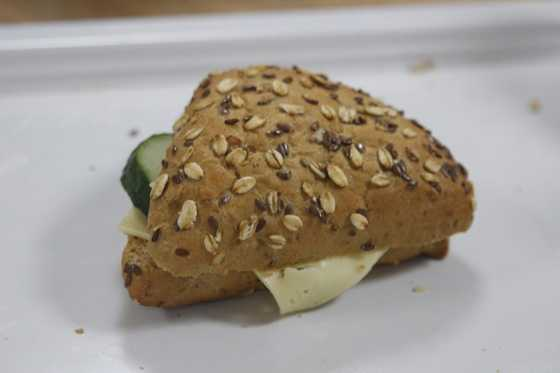
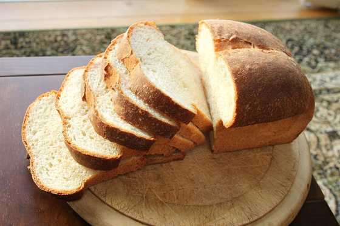
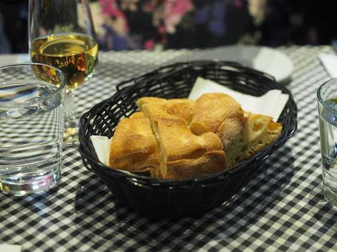
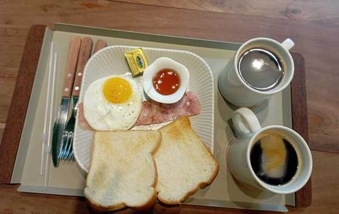
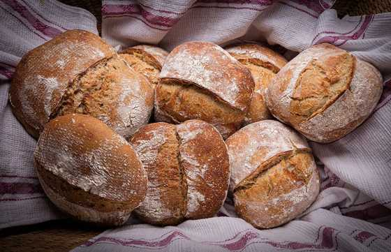
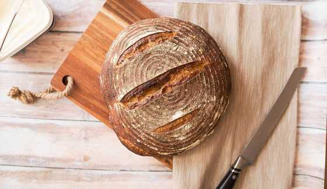

パン・お惣菜
お惣菜パンやあんぱんなどを扱っていると紹介されています。品目・価格の詳細は準備中です。











掲載の写真はフリー素材のイメージで、店舗の実際の商品や様子ではありません。
毎日の食卓にそっと並ぶ、日常の食事になるパン。
Pandelica(パンデリカ)は、和歌山市土入の住宅街に2026年1月29日にオープンしたパン屋です。コンセプトは「日常の食事になるパン」。お惣菜、焼成、盛り付けまで、すべて手作りで一つひとつ丁寧に作られていると紹介されています。
あんぱんには和歌山の老舗和菓子店・金澤寿翁軒の餡を使っているとお店の投稿にあります。店内にはEXPO2025オーストリア館に展示された、ひろき真冬さんの作品も飾られているそうです。
店名の意味や開業の経緯は公開情報で確認できていません。制作側のイメージでは、「パン」と「おいしい(delicious)」を思わせる響きと感じました(確認済みの事実ではありません)。

お惣菜パンやあんぱんなどを扱っていると紹介されています。品目・価格の詳細は準備中です。





掲載の写真はフリー素材のイメージで、店舗の実際の商品や様子ではありません。
朝のうちに行ったのに、棚がもう少なくなっていて驚きました。早めに行くのがおすすめです。
お惣菜パンがしっかりお腹にたまって、お昼ごはんにちょうどよかったです。
あんぱんの餡がやさしい甘さで、家族みんなで分け合いました。
上記は制作側が作成したイメージ例で、実際のお客様の声ではありません。
いずれもフリー素材(撮影地は主に国外・不明)。実際の店舗とは関係ありません。